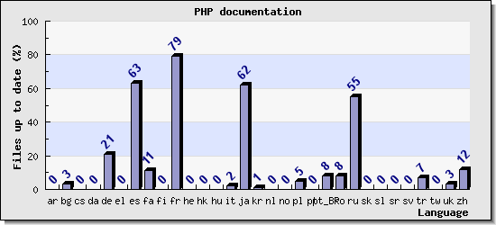

А бывает и подобное 😟
Пример из французского перевода

@lex111
Iterable является псевдотипом введенным в PHP 7.1
Iterable - псевдотип, введенный в PHP 7.1
На данный момент перевод на русский находится в некотором анабиозе.
Все активные переводчики потеряли интерес или не могут найти на него время (увы, включая меня). А все новые люди, проявлявшие интерес, тоже как-то быстро пропадают =)
The ru build of the PHP Manual is broken, so it does not validate or build. Please fix it! ;)
Attached is the full log
Love, The docs.php.net server
…
Eyh man. No worries. Happ shittens. Try again after fixing the errors above.
=============> Something happenend when snapshotting ru
Failed completely
=============> Please have a look!
<?xml version="1.0" encoding="utf-8"?>
<!-- $Revision: 344912 $ -->
<!-- EN-Revision: 344864 Maintainer: lex Status: ready -->
<!-- Reviewed: no -->
<refentry xml:id="function.is-countable" xmlns="http://docbook.org/ns/docbook">
<refnamediv>
<refname>is_countable</refname>
<refpurpose>
Проверить, что содержимое переменной является счетным значением
</refpurpose>
</refnamediv>
<refsect1 role="description">
&reftitle.description;
<methodsynopsis>
<type>bool</type><methodname>is_countable</methodname>
<methodparam><type>mixed</type><parameter>var</parameter></methodparam>
</methodsynopsis>
<para>
Проверить, что содержимое переменной массив (<type>array</type>) или
объект, реализующий <classname>Countable</classname>
</para>
</refsect1>
<refsect1 role="parameters">
&reftitle.parameters;
<para>
<variablelist>
<varlistentry>
<term><parameter>var</parameter></term>
<listitem>
<para>
Значение для проверки
</para>
</listitem>
</varlistentry>
</variablelist>
</para>
</refsect1>
<refsect1 role="returnvalues">
&reftitle.returnvalues;
<para>
Возвращает &true;, если <parameter>var</parameter> счетная или &false; в противном случае.
</para>
</refsect1>
<refsect1 role="changelog">
&reftitle.changelog;
<informaltable>
<tgroup cols="2">
<thead>
<row>
<entry>&Version;</entry>
<entry>&Description;</entry>
</row>
</thead>
<tbody>
<row>
<entry>7.3.0</entry>
<entry>
Добавлена функция <function>is_countable</function>.
</entry>
</row>
</tbody>
</tgroup>
</informaltable>
</refsect1>
<refsect1 role="examples">
&reftitle.examples;
<para>
<example>
<title>Примеры использования <function>is_countable</function></title>
<programlisting role="php">
<![CDATA[
<?php
var_dump(is_countable([1, 2, 3])); // bool(true)
var_dump(is_countable(new ArrayIterator(['foo', 'bar', 'baz']))); // bool(true)
var_dump(is_countable(new ArrayIterator())); // bool(true)
var_dump(is_countable(new stdClass())); // bool(false)
]]>
</programlisting>
</example>
</para>
</refsect1>
<refsect1 role="seealso">
&reftitle.seealso;
<para>
<simplelist>
<member><function>is_array</function></member>
<member><function>is_object</function></member>
<member><function>is_iterable</function></member>
<member><function>is_bool</function></member>
</simplelist>
</para>
</refsect1>
</refentry>
<!-- Keep this comment at the end of the file
Local variables:
mode: sgml
sgml-omittag:t
sgml-shorttag:t
sgml-minimize-attributes:nil
sgml-always-quote-attributes:t
sgml-indent-step:1
sgml-indent-data:t
indent-tabs-mode:nil
sgml-parent-document:nil
sgml-default-dtd-file:"~/.phpdoc/manual.ced"
sgml-exposed-tags:nil
sgml-local-catalogs:nil
sgml-local-ecat-files:nil
End:
vim600: syn=xml fen fdm=syntax fdl=2 si
vim: et tw=78 syn=sgml
vi: ts=1 sw=1
-->
| Имя | Кол-во файлов |
|---|---|
| Андрей Громов (rjhdby) | 2986 |
| Дмитрий Винярчук (tmn) | 1043 |
| Алексей Шеин (shein) | 924 |
| Максим Чабан (mch) | 818 |
| Андрей Безруков (aur) | 624 |
| Михаил Баранов (northcat) | 212 |
| Борис Флейтлих (bfl) | 138 |
| Юрий Бабиков (alien) | 102 |
| Александр Москалёв (irker) | 88 |
И многие другие...
Проще показать непосредственно на примере...

Круче русской локализации только японцы, испанцы и французы.

Алексей Пыльцын
Email — lex@php.net
GitHub —lex111